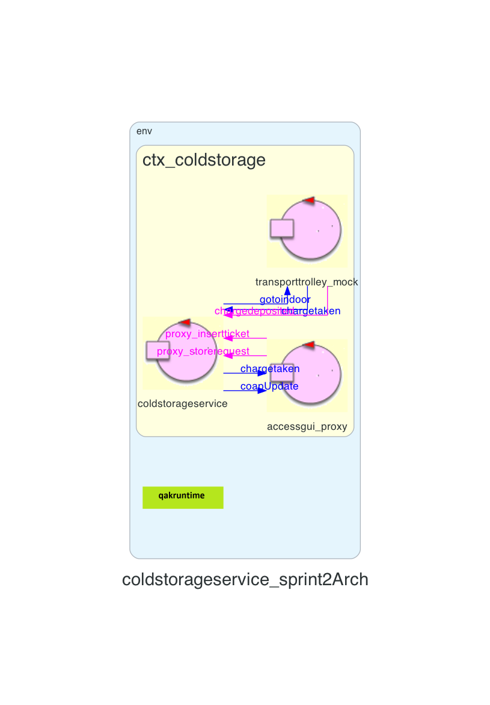

Introduction
Lo Sprint2 è il naturale proseguo di quanto realizzato nello Sprint1. Dopo aver delineato, realizzato e testato il Core Business del sistema, composto dal ColdStorageService e Transport Trolley, possiamo prosegurie sostituendo il simulatore della ServiceAccessGUI con il componente reale.Requirements
Descrizione del
TemaFinale23
Goals Sprint 2
- Identificare ed analizzare tutti i problemi relativi ai requisiti che coinvolgono la ServiceAccessGUI
- Integrare al sistema realizzato nello Sprint1 la ServiceAccessGUI, che permette l'interazione tra il conducente del Fridge Truck ed il servizio ColdStorageService
- Realizzare l'interfaccia grafica
- Testare il sistema
Requirement analysis
Chiarimenti del committente
L'interazione con il committente ha permesso di chiarire alcuni aspetti del progetto:Chiarimenti con il committente
Sistema
Lo Sprint1 prevede l'interazione tra due componenti principali: ServiceAccessGUI e ColdStorageService. Il TransportTrolley può essere sostituito da un componente mock, per velocizzare i test. Essendo la parte di interazione ColdStorageService-TransportTrolley già stata realizzata durante lo Sprint1, sarà immediato sostituire il componente reale una volta terminato questo Sprint2.
Analisi
Dai requisiti espressi nel Tema Finale e dalle analisi già effettuate negli Sprint0 e Sprint1, in questo Sprint occorre analizzare le entità:- ServiceAccessGUI, che è una interfaccia grafica per interagire con il servizio
- ColdStorageService, per verificare che sia pienamente compatibile con il workflow una volta introdotta la GUI
Analisi del Problema
Il corpo di questo sprint è il componente ServiceAccessGUI.ServiceAccessGUI
ColdStorageService
Interazioni
| Messaggio | Mittente | Destinatario | Semantica messaggio | Descrizione |
|---|---|---|---|---|
Architettura logica
Codice QAK per la modellazione del sistema: ColdStorageService.qak
Il sistema da noi modellato, presenta la seguente architettura logica:

Test plans
| Test | Entità coinvolte | Scenario | Comportamento atteso |
|---|---|---|---|
Project
Conclusioni
Gli output dello sprint2 sono:
- ServiceAccessGUI
- Versione aggiornata ColdStorageService
- MockTransportTrolley
Goals Sprint 3
Si possono definire in seguito i goal relativi allo Sprint3:- Testare il sistema
By
Tassinari Gabriele, email: gabriele.tassinari2@studio.unibo.it
Baraldi Leonardo, email: leonardo.baraldi@studio.unibo.it
Koss Krystian, email: krystian.koss@studio.unibo.it


GIT repo: https://github.com/4utotune/ColdStorageService/
Tassinari Gabriele, email: gabriele.tassinari2@studio.unibo.it
Baraldi Leonardo, email: leonardo.baraldi@studio.unibo.it
Koss Krystian, email: krystian.koss@studio.unibo.it
GIT repo: https://github.com/4utotune/ColdStorageService/